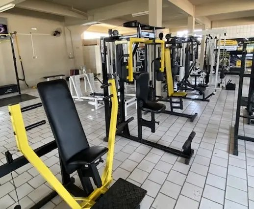

Felipe Ribeiro
Aluno da Up Fit
Penha · Lages, SC
Musculação, movimento e gente por perto. Conheça a Up Fit, no bairro Penha, e encontre espaço para o treino no seu dia.
Conhecer a Up Fit
A Up Fit fica no bairro Penha. Aqui você encontra equipamentos de musculação, armários e vestiário. Venha conhecer o espaço e conversar com a equipe sobre o que procura.
Equipamentos de musculação para trabalhar força e incluir atividade física na sua rotina. Converse com a equipe sobre sua experiência e seus objetivos antes de começar.
Funcional e cardio estão entre as atividades apresentadas pela Up Fit. Consulte a programação atual e encontre uma opção que combine com sua rotina.
Procura acompanhamento individual? Fale com a Up Fit sobre o serviço de personal trainer, disponibilidade dos profissionais e condições de atendimento.
Conheça os relatos de Felipe e Dona Miguelina, compartilhados pela academia. Assista aqui mesmo, no seu tempo.
Aluno da Up Fit
Aluna da Up Fit
Planos e aula experimental: fale diretamente com a equipe.
Horários do site da academia. Confirme antes de ir, especialmente aos sábados e feriados.
Rua Evilásio Ribeiro Koeche, 516
Penha, Lages – SC
Consulte preços, formas de pagamento e as condições atuais da aula experimental pelo WhatsApp. A equipe também informa as modalidades disponíveis e os horários das turmas.
A Up Fit aparece nos cadastros do Wellhub e do TotalPass. Confira no seu aplicativo a elegibilidade do plano e as regras de acesso.
Converse com a equipe sobre seu objetivo, sua rotina e sua experiência com exercícios. Na visita você pode conhecer o espaço e tirar suas dúvidas antes de escolher um plano.
Para conhecer a academia, confirme o melhor horário pelo WhatsApp. A disponibilidade de aulas, de personal e de aula experimental deve ser consultada com a equipe.